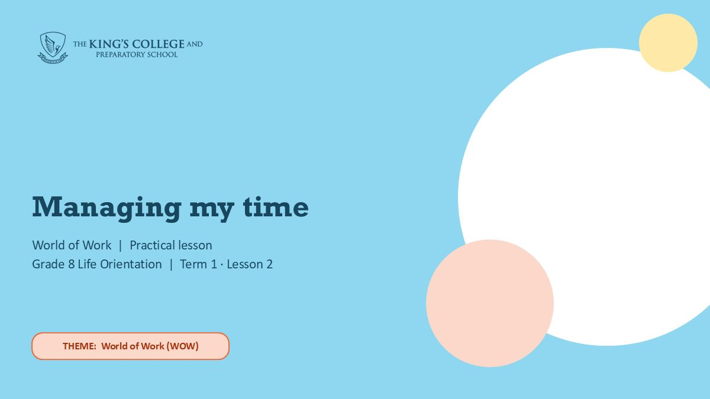

Term 1 · Lesson 2 · Practical: Google Calendar set-up
Managing my time
Start here
Today I will
- Tell the difference between urgent and important
- Set up my Google Calendar for the term
- Understand my Term 1 Google Calendar task
How many tests and tasks do you think you will have this term, in all your subjects together?
Words to know
- Time management
- Planning how you use your time so the important things get done.
- Urgent
- It needs to be done now or very soon.
- Important
- It matters for your goals, health or relationships.
- Deadline
- The date and time by which something must be handed in.
- Planning backwards
- Starting at the deadline and working back to decide when to do each step.
- Procrastinate
- To keep putting something off until later.
Slides

Videos
Notes
High school brings more subjects, more tests and more tasks than primary school, often several in one week. Learners who plan their time well feel less stressed, hand in better work and still have time for sport, family, church and rest.
What is time management?
Time management means planning how you use your time so that the important things get done on time. It does not mean being busy every minute. It means deciding in advance what matters most and making space for it. Good time management also includes rest, because a tired brain does not learn well.
Urgent vs important
A useful way to decide what to do first is to ask two questions about every task: Is it URGENT (does it have to happen now or very soon)? Is it IMPORTANT (does it matter for my goals, health or relationships)? This gives four groups, often called the urgent/important grid (or the Eisenhower matrix).
| Group | Example | What to do |
|---|---|---|
| Urgent and important | A task due tomorrow; a test tomorrow | Do it now. |
| Important, not urgent | Studying a week before a test; starting a project early; exercise; sleep | Plan it. Successful learners spend most of their time here. |
| Urgent, not important | Most notifications, messages and other people's small requests | Keep it short or do it later. |
| Not urgent, not important | Endless scrolling, binge-watching | Limit it. |
If you leave important tasks until they become urgent, you end up rushing, sleeping less and doing poorer work. Planning ahead moves your work into the 'important, not urgent' group, where you are in control.
Planning backwards from a deadline
A deadline is the date and time by which work must be handed in. Planning backwards means starting at the deadline and working back to decide when each step must be done.
- Write the deadline in your calendar.
- Break the task into small steps (e.g. research, draft, check, hand in).
- Give each step its own day, counting back from the deadline.
- Add reminders a day or two before each step.
- Leave a spare day before the deadline in case something unexpected happens (illness, a match, load-shedding).
A History project is due on Friday 14 March. Planning backwards: Thursday 13 = spare day; Wednesday 12 = final check and print; Monday 10 = write the draft; Thursday 6 = research. Each step is small, so nothing is left for the last night.
Preparing for tests
- Start revising about a week before the test, in short sessions (30–45 minutes), rather than one long session the night before.
- Test yourself (cover your notes and write what you remember) instead of only re-reading.
- Ask your teacher about anything you don't understand early, not on the day of the test.
- Get enough sleep the night before: sleep helps the brain store what you learnt.
Using Google Calendar
Google Calendar (with your school account) keeps all your deadlines in one place, on your phone and computer, and reminds you before things are due.
- Colours: give each subject its own colour, and use another colour for sport, church and family, so that you can see your week at a glance.
- Deadlines: add every test and task as an event named 'Due: Subject – task' (e.g. 'Due: English – essay').
- Study blocks: add planned study sessions before each deadline, named '[Subject] study session'.
- Reminders: set a notification, e.g. two days before a deadline and 10 minutes before a study block.
- Weekly check: every Sunday evening, look at the week ahead and move things around if needed. A plan only helps if you use it.
Beating procrastination
To procrastinate means to keep putting something off. It usually happens when a task feels too big or boring. Break it into a first tiny step ('open the document and write the heading'), put your phone in another room, work for a set time (e.g. 25 minutes) and then take a short break.
Why high school feels so busy
In primary school, teachers often reminded you of every test and task. In high school you have more subjects, more teachers and more deadlines, sometimes three or four in one week, and you are expected to keep track of them yourself. This is a skill, not a talent: anyone can learn it. Learners who don't plan often end up in a cycle of rushing, sleeping late, handing in weaker work and feeling stressed, which makes it even harder to plan the next week.
The cost of leaving things to the last minute
- Stress: your body releases stress hormones that make it harder to think clearly and remember.
- Poor sleep: staying up late to finish work means you are tired the next day and learn less in class.
- Weaker work: there is no time to check, improve or ask for help.
- Missed opportunities: no time for sport, church, family or rest, which are also important for a balanced life.
Case study: Aarav's first big week
In Week 4 Aarav had a Maths test on Tuesday, an English oral on Wednesday and a History project due on Friday. He also had cricket practice with Coach Des on Monday and Thursday. On Sunday night he panicked because he had not started anything. Mia showed him her Google Calendar: she had colour-coded each subject and had added study blocks two days before each deadline. Aarav planned backwards: he moved his History research to the weekend, practised his oral in the car on Monday, and did 30 minutes of Maths each evening. He still had a busy week, but he finished everything and even made cricket practice.
Questions to think about: Which of Aarav's tasks were urgent and important? What did planning backwards change for him? What could he do differently next term so that Sunday night is not a panic?
Balance: work, rest and the things that matter
Good time management is not about working all the time. God designed us to need rest (think of the Sabbath principle of one day in seven). A good weekly plan includes school work, sport, family time, church or youth group, and enough sleep (teenagers need about 8–10 hours a night). When you plan rest on purpose, you are more focused when you work.
Worked exam answer
Question: Explain how planning backwards can reduce stress for a Grade 8 learner. (1 x 2) (2)
Answer: Big tasks are broken into small steps that are spread over several days ✓, so the learner does not have to do everything the night before and feels less stressed ✓.
Know the four groups of the urgent/important grid with an example of each, and be able to explain (with a reason and a result) how planning backwards reduces stress.
Put every deadline in one place, then plan backwards from it.
In class: Set up my calendar
- Open Google Calendar with your school account.
- Create your subject colours.
- Add every test and task date from the term assessment calendar.
- Add one study block before each deadline and set reminders.
- Read the Task 1 brief: it is due Friday of Week 4.
Test yourself
- Give an example of something urgent but not important.
- What does 'planning backwards' mean?
- When is Task 1 due?
Show answers
1. A notification, most messages, someone wanting something right now. 2. Starting at the deadline and working back to plan when to do each step. 3. Friday of Week 4.
Finished early?
Practise planning backwards from a deadline for a pretend task.
- In your LO book, imagine an Art project is due in 10 days. Write the deadline at the bottom of a list of days.
- Break the project into four small steps (for example: ideas, sketches, final piece, check).
- Counting back from the deadline, give each step its own day, and keep one spare day just before the deadline.
- Next to each step, write the reminder you would set in Google Calendar.